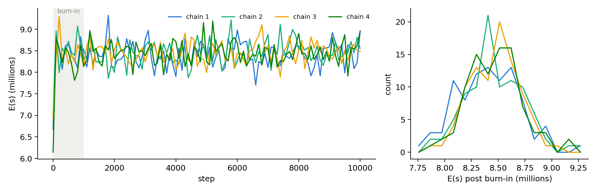
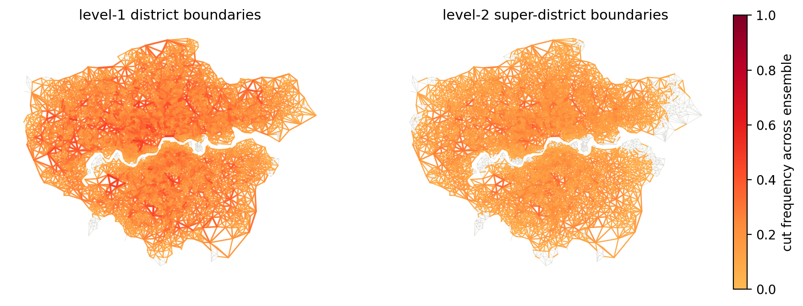
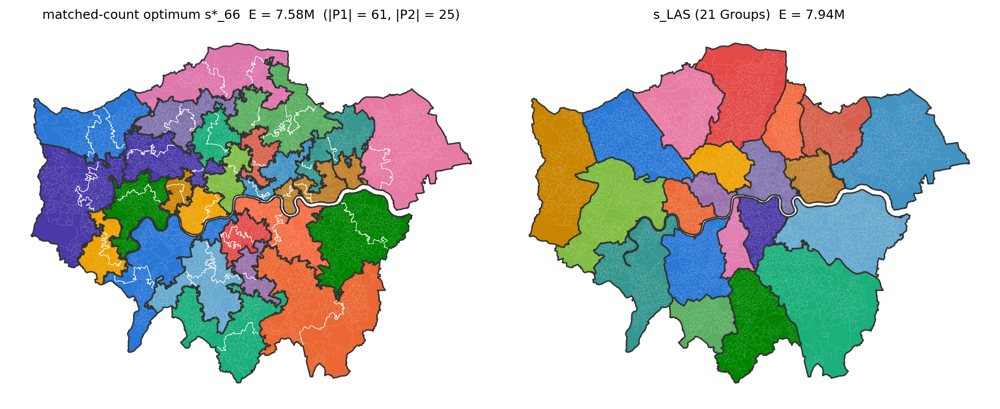

| E (M) | T_mean (min) | T90 (min) | C8 | C15 | |
|---|---|---|---|---|---|
| ensemble mean (95% band) | – | 3.05 (2.86–3.26) | 5.36 | 98.5% | 99.9% |
| matched-count optimum s*_66 (≤ 66 sites) | 7.578 | 2.95 | 5.06 | 99.2% | 100.0% |
| s_LAS | 7.940 | 2.93 | 4.78 | 99.5% | 100.0% |
Energy gap E(s_LAS) − E(s*) = 0.362M (4.8% of E(s*)) · R̂(E) = 0.998 · boundary edges L1: 0.0% robust / 88.8% contested / 11.2% fixed · stations used >90%: 0, 10–90%: 12, <10%: 54 · real-station center share: 4.9%


